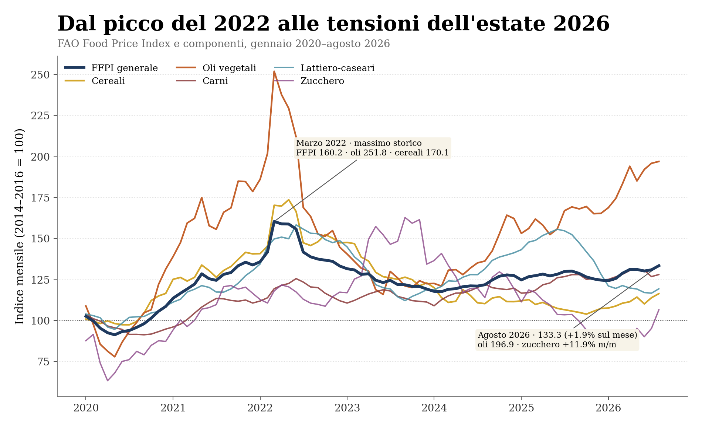
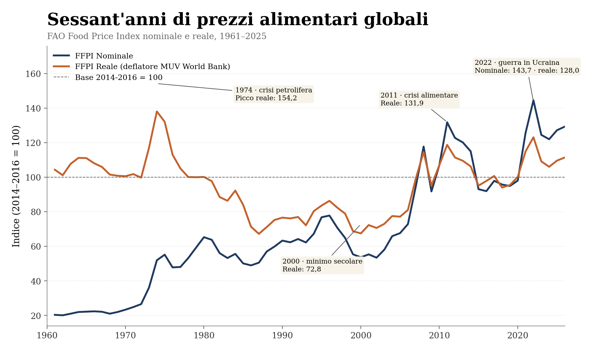
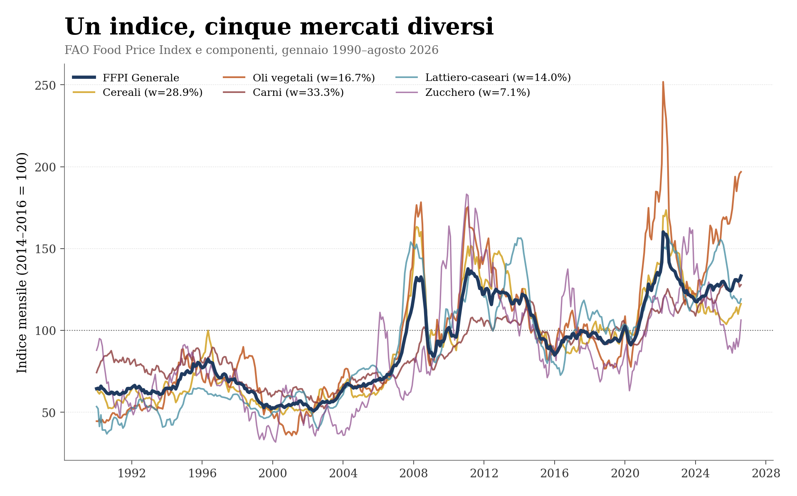
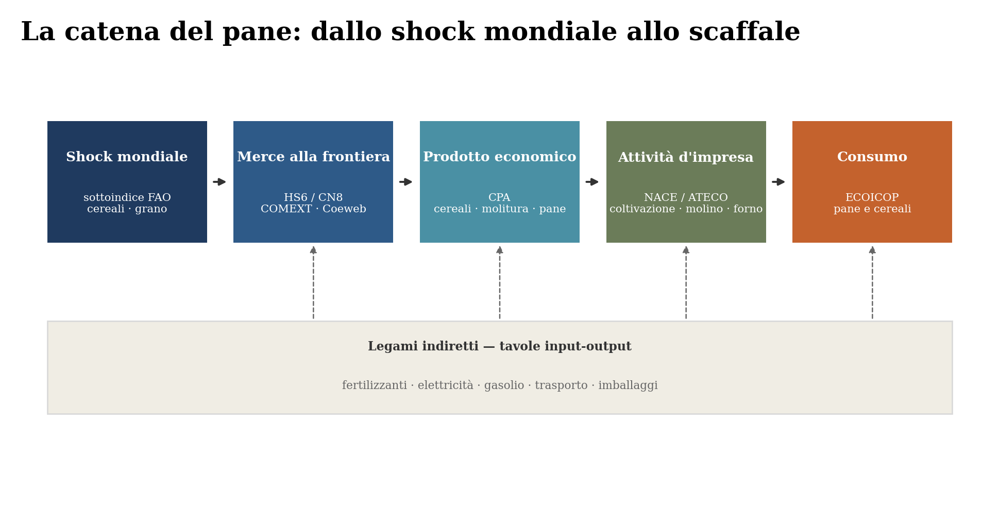
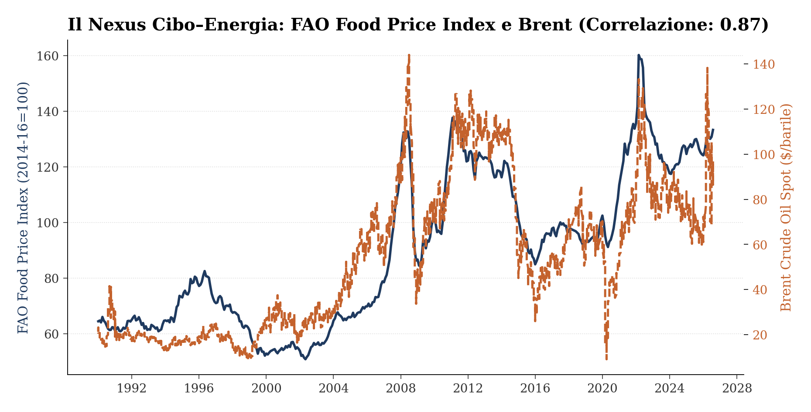
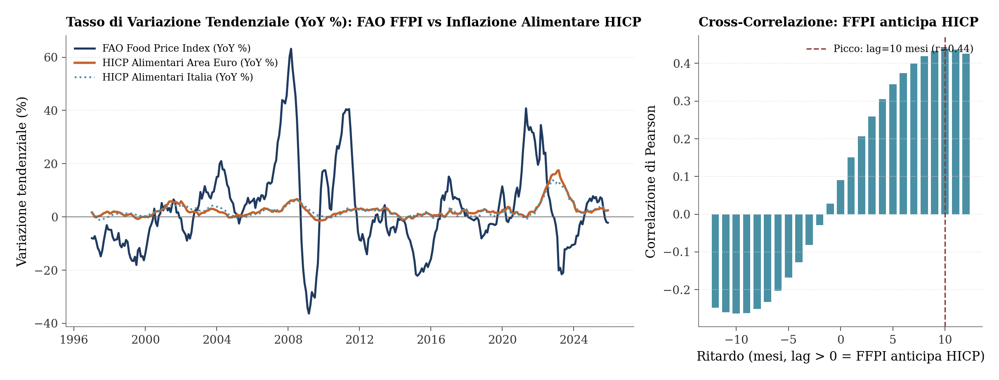
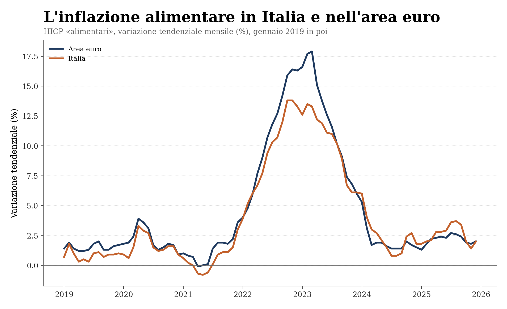

Dal mercato mondiale allo scaffale
Il rapporto FAO di settembre e le filiere alimentari italiane
Paolo Volterra ![]()
Il 4 settembre 2026 la FAO ha segnalato un aumento diffuso dei prezzi internazionali delle materie prime alimentari. In agosto il Food Price Index è salito dell’1,9 per cento e tutte le sue componenti sono aumentate. Il livello generale resta lontano dal massimo del 2022 e le scorte mondiali di cereali sono ancora relativamente confortevoli. Il dato merita tuttavia attenzione perché clima, energia e difficoltà delle rotte commerciali stanno incidendo insieme su più mercati. Il documento parte dall’indice FFPI, ricostruisce i passaggi dalla commodity al prezzo finale e propone una lettura per prodotto, filiera e territorio. Infine richiama un metodo per distinguere le esposizioni che possono comprimere margini e assorbire liquidità da quelle protette da scorte, contratti e potere di prezzo.
FAO Food Price Index, prezzi alimentari, filiere agroalimentari, inflazione, imprese, Mezzogiorno
Versione citabile su Zenodo, con il PDF: doi.org/10.5281/zenodo.22672181.
1 Il rapporto FAO: che cosa è cambiato in agosto
La pagina ufficiale del FAO Food Price Index (FFPI), aggiornata il 4 settembre 2026, descrive un rincaro esteso a tutti i principali gruppi di materie prime alimentari e mette a disposizione i dataset alla base dell’indice [1]. Il FFPI ha raggiunto 133,3 punti, il 1,9% in più rispetto a luglio e il 2,5% in più rispetto ad agosto 2025 [2], [3].
Il dato non indica una nuova crisi alimentare. L’indice è ancora del 16,8 per cento sotto il massimo di marzo 2022; per i cereali, il rapporto fra scorte e impieghi previsto per il 2026/27 è pari al 31,6 per cento e resta, nella valutazione della FAO, relativamente confortevole [4]. L’elemento nuovo è la diffusione delle pressioni: nello stesso mese sono aumentati cereali, oli, carni, lattiero-caseari e zucchero.
| Componente | Agosto 2026 | Sul mese | Sull’anno | Informazione da conservare |
|---|---|---|---|---|
| FFPI | 133,3 | +1,9% | +2,5% | rialzo comune ai cinque mercati |
| Carni | 127,9 | +1,0% | +0,1% (stabile) | aumentano pollame, suini e ovini; cala il bovino |
| Lattiero-caseari | 119,2 | +2,3% | -21,7% | recupero mensile, livello ancora basso sull’anno |
| Cereali | 116,3 | +2,2% | +10,0% | domanda, meteo e rotte del Mar Nero |
| Oli vegetali | 196,9 | +0,6% | +16,4% | terzo aumento consecutivo, massimo dal giugno 2022 |
| Zucchero | 106,4 | +11,9% | +2,7% | il movimento più brusco del mese |
Tabella 1: FAO Food Price Index e sottoindici ad agosto 2026, elaborazione sul dataset ufficiale pubblicato il 4 settembre 2026. Le variazioni sono calcolate sui valori non arrotondati.
La tabella separa il movimento dell’indice generale da quello dei mercati che lo compongono. Il rialzo non dipende da una sola commodity: tutte le righe hanno un segno mensile positivo. Cambiano però intensità e significato economico. Lo zucchero registra lo scatto più rapido, gli oli raggiungono un livello che non si osservava dal 2022, mentre le carni restano quasi ferme rispetto a un anno prima. Per valutare un’esposizione concreta occorre quindi partire dalla componente pertinente, non dal solo FFPI.
Per lo zucchero si sono sommati minori rendimenti attesi della barbabietola europea, caldo e siccità, rischi associati a El Niño in Asia, minore produzione nel Centro-Sud del Brasile e l’annuncio di importazioni indiane senza dazio. Nei cereali, il grano è aumentato del 2,6 per cento nel mese e del 15,0 per cento nell’anno; il mais ha risentito delle prospettive di resa negli Stati Uniti e nell’Unione europea, della domanda per mangimi ed etanolo e delle difficoltà nell’approvvigionamento di input legate a Hormuz [2].
Il rialzo di agosto è la parte più recente di una risalita cominciata a metà 2023 (Figura 1). Le carni sono aumentate sull’anno solo del 0,1% per cento; gli oli vegetali, al contrario, sono al livello più alto dal 2022.

Figura 1: Dopo il massimo del 2022 l’indice è sceso fino a metà 2023, poi ha ripreso a salire; l’aggregato nasconde traiettorie molto diverse fra i cinque mercati.
La figura mostra che la discesa successiva al picco del 2022 non si è tradotta in un ritorno uniforme alle condizioni precedenti. Dal minimo del 2023 l’indice generale ha recuperato terreno, ma le componenti si sono divaricate: nel 2026 la pressione viene soprattutto dagli oli e, nell’ultimo mese, dallo zucchero. Il segnale da conservare è dunque la riaccensione simultanea di mercati che restano su livelli e traiettorie differenti.
2 Il FFPI non è il prezzo del cibo in Italia
Il FFPI riassume quotazioni internazionali di merci alimentari scambiate sui mercati mondiali. È una media di cinque sottoindici, ponderati con le quote dell’export mondiale del 2014–2016: carni 33,3 per cento, cereali 28,9, oli vegetali 16,7, lattiero-caseari 14,0 e zucchero 7,1 [5]. Gli stessi pesi si ricavano, con errore trascurabile, da una regressione dell’indice generale sui cinque sottoindici.
L’indice riconosce uno shock comune a monte, ma non dice quanto costa la spesa in Italia né quale impresa ne risentirà di più. Fra quotazione internazionale e prezzo finale intervengono cambio, trasporto, contratti, scorte, trasformazione, energia, lavoro, distribuzione, imposte e margini.
Le serie utilizzate in questo documento non sono state estratte dal portale generale FAOSTAT. I livelli mensili dal 1990, le componenti e le serie annuali nominali e reali dal 1961 provengono dai file Excel e CSV pubblicati nella pagina World Food Situation dedicata al FFPI [1], [3]. FAOSTAT entra a monte nella costruzione metodologica dell’indice, perché le quote medie del valore delle esportazioni mondiali del 2014–2016 determinano i pesi dei cinque gruppi; non è però la sorgente diretta delle osservazioni rappresentate nei grafici [5].
| Misura | Oggetto osservato | Domanda a cui risponde | Non dice direttamente |
|---|---|---|---|
| FAO FFPI | commodity internazionali | aumentano le tensioni a monte? | quanto paga una famiglia italiana? |
| Prezzi agricoli | input e output degli agricoltori | i costi crescono più dei ricavi? | qual è il margine della trasformazione? |
| Prezzi alla produzione | vendite dell’industria | il rincaro è arrivato ai trasformatori? | quanto passa al dettaglio? |
| NIC/IPCA alimentare | prezzi al consumo | come cambiano i prezzi sullo scaffale? | quale materia prima ha originato il rincaro? |
| Conti dell’impresa | costi, scorte, ricavi e debito | chi assorbe lo shock e chi lo trasferisce? | come si muove il mercato mondiale? |
Le cinque misure non sono alternative, ma corrispondono a passaggi successivi della stessa analisi. Il FFPI segnala la tensione iniziale; i prezzi agricoli e alla produzione mostrano se essa entra nei costi e nei ricavi della filiera; NIC e IPCA verificano l’arrivo al consumatore; i conti aziendali rivelano infine chi ha assorbito il rincaro nei margini o nel capitale circolante. Saltare un passaggio porta facilmente ad attribuire a un indice una capacità esplicativa che non possiede.

Figura 2: In prospettiva storica il livello del 2026 resta inferiore ai massimi delle grandi crisi alimentari.
La lettura di lungo periodo ridimensiona il dato corrente: il livello reale recente è elevato rispetto a molte fasi del secondo Novecento, ma resta inferiore ai massimi associati alle grandi crisi alimentari. La figura serve quindi a distinguere una pressione da monitorare da un episodio eccezionale già comparabile con i picchi storici.

Figura 3: La distanza fra i sottoindici mostra perché l’aggregato non possa essere applicato indistintamente a prodotti diversi.
Dal 1990 le componenti non si muovono con la stessa ampiezza: oli vegetali e zucchero presentano oscillazioni più brusche, mentre le carni tendono a stabilizzare l’aggregato. Due imprese appartenenti entrambe all’agroalimentare possono pertanto affrontare shock molto diversi per intensità, durata e fabbisogno finanziario, a seconda delle materie prime utilizzate.
3 Dalla categoria FAO al prodotto: l’esempio del pane
Dire che «salgono i cereali» è ancora troppo generico. Occorre collegare classificazioni nate per scopi diversi. La mappatura fra classificazioni doganali (HS/CN), produttive (CPA, NACE/ATECO) e di consumo (ECOICOP), integrata dalle tavole input-output, offre uno schema riusabile: i codici doganali identificano le merci che attraversano la frontiera; CPA e ATECO le collegano alla produzione; l’ECOICOP individua il bene acquistato dal consumatore. Le tavole input-output aggiungono gli acquisti intermedi che non compaiono nel nome del prodotto finale.
Il pane rende visibile il procedimento (Figura 4): lo shock sul sottoindice cereali si propaga al frumento e alle farine che entrano nell’Unione, alle branche della molitura e della panificazione, alle imprese che le esercitano e infine al prezzo del pane nel paniere delle famiglie. In parallelo, fertilizzanti, elettricità, gasolio, trasporto e imballaggi entrano nel costo a ogni stadio senza comparire nel nome del prodotto.

Figura 4: La stessa merce cambia nome a ogni classificazione; i costi indiretti entrano lateralmente a ogni stadio.
La figura va letta da sinistra a destra: ogni passaggio cambia l’unità osservata, dalla commodity mondiale alla merce importata, poi al prodotto e all’attività economica, fino al bene acquistato. La fascia inferiore ricorda che energia, fertilizzanti, trasporto e imballaggi incidono trasversalmente. Non esiste quindi una corrispondenza automatica fra il sottoindice FAO dei cereali e il prezzo del pane.
Il codice ATECO di un panificio non rivela se la farina sia nazionale o importata, se il prezzo sia fissato per tre o dodici mesi, quanto pesino energia e packaging, né se l’impresa venda alla grande distribuzione o direttamente al pubblico. Due panifici con lo stesso codice possono avere esposizioni opposte.
Una filiera combina almeno tre reti. Quella merceologica collega grano, farina e pane; quella produttiva collega agricoltura, molitura, panificazione, logistica e distribuzione; quella contrattuale e finanziaria collega fornitori, clienti, durata dei listini, scorte e tempi di pagamento. Solo l’insieme descrive l’esposizione effettiva.
4 Il legame fra cibo ed energia
I prezzi energetici e quelli alimentari tendono a muoversi insieme. In letteratura questo intreccio è chiamato nexus, parola latina che significa «legame» o «connessione»: qui indica l’insieme dei rapporti attraverso cui energia e cibo si influenzano o reagiscono agli stessi shock. Non è una variabile statistica aggiuntiva e non implica, da solo, un rapporto di causa.
| Canale | Meccanismo | Possibile effetto |
|---|---|---|
| Input agricoli | gas ed energia entrano nei fertilizzanti; il gasolio alimenta i macchinari | aumento del costo per ettaro |
| Trasformazione | elettricità e calore servono per molitura, refrigerazione, essiccazione e cottura | pressione sui margini industriali |
| Logistica | carburante e noli incidono su merci voluminose o deperibili | maggior costo fino al punto vendita |
| Biocarburanti | mais, zucchero e oli competono come materie prime energetiche | petrolio e politiche energetiche modificano la domanda agricola |
| Shock comuni | guerre, strozzature marittime e ciclo mondiale agiscono su entrambi | correlazione senza un’unica direzione causale |
I canali elencati operano in momenti diversi e possono sommarsi. Il gas incide a monte sui fertilizzanti; elettricità e calore pesano nella trasformazione; carburanti e noli accompagnano il prodotto lungo la distribuzione. Biocarburanti e shock geopolitici aggiungono legami di domanda e fattori comuni. Per questo un rincaro energetico può raggiungere lo stesso prodotto più volte, senza che la correlazione fra due indici permetta di attribuire a ciascun canale un effetto preciso.

Figura 5: Il grafico descrive il co-movimento di lungo periodo; i canali economici devono essere identificati separatamente.
La correlazione contemporanea fra i livelli mensili del FFPI e del Brent nel periodo 1990/01 – 2026/08 è pari a 0,871 (Figura 5). Documenta un forte co-movimento, ma non misura quanto un aumento del petrolio causi un aumento del cibo: serie persistenti possono essere correlate perché condividono trend e shock globali. Peersman usa sorprese nei raccolti mondiali per isolare shock esogeni ai prezzi alimentari e trova effetti sull’inflazione dell’area euro attraverso catena produttiva, aspettative e cambio [6].
Nel grafico le due serie sono riportate su scale distinte, quindi va confrontata la direzione dei movimenti e non la distanza verticale fra le linee. La forte concordanza segnala periodi in cui le pressioni si sovrappongono; gli scostamenti, invece, ricordano che raccolti, scorte e politiche agricole conservano una dinamica propria.
Il rapporto FAO di settembre non descrive un episodio esclusivamente agricolo: cita clima, rotte del Mar Nero e input ostacolati da Hormuz. Se cibo ed energia si muovono insieme, la stessa impresa può subire il rincaro della materia prima, della trasformazione e del trasporto. Questa sovrapposizione, più del FFPI isolato, può comprimere il margine e aumentare il fabbisogno di liquidità.
5 Come si trasmettono i prezzi lungo la filiera
La letteratura invita a non applicare un coefficiente unico. Ferrucci, Jiménez-Rodríguez e Onorante trovano per l’area euro un pass-through significativo e persistente usando prezzi coerenti con la politica agricola europea e dati disaggregati [7]. Peersman distingue gli shock esogeni di offerta dai movimenti dovuti alla domanda globale: senza questa identificazione, il FFPI è un segnale anticipatore, non una prova causale [6].
Tre studi aggiungono indicazioni complementari. Su microdati svedesi, un aumento dell’1 per cento dei prezzi alla produzione si associa a circa 0,25 per cento sui prezzi al consumo nello stesso mese e a 0,35 per cento dopo due mesi; la risposta è più rapida per alimentari e carburanti, i cui listini cambiano spesso [8]. Arndt ed Enders trovano che gli shock si trasmettono con maggiore forza e persistenza quando l’inflazione è volatile [9]. Sui dati dell’indagine italiana SIGE, De Fiore, Lombardi e Mangiante documentano risposte eterogenee e asimmetriche delle imprese ai prezzi degli input [10].
Il Banco de España combina commodity e carburanti, prezzi agricoli, prezzi alla produzione, prezzi al consumo e futures; separa trasmissione media e asimmetrica e costruisce scenari condizionati [11]. Un lavoro FAO recente trova che cibo ed energia spiegano una quota sostanziale del rincaro post-pandemico, ma che i prezzi finali sono cresciuti più di quanto previsto dai rapporti storici: occorre quindi osservare anche i margini lungo la catena [12].
| Risultato | Conseguenza per il monitoraggio |
|---|---|
| il pass-through varia per prodotto | cereali, zucchero, oli, carni e latte vanno separati |
| i listini frequenti reagiscono prima | la velocità di alcuni alimentari non vale per tutti i beni |
| la volatilità accelera l’aggiustamento | contano regime inflazionistico e contratti, non solo lo shock |
| rincari e ribassi possono trasmettersi diversamente | uno scenario simmetrico può sottostimare la compressione dei margini |
| l’aggregato confonde domanda e offerta | la correlazione anticipatrice non dimostra causalità |
La tabella traduce i risultati della letteratura in criteri di osservazione. La disaggregazione per prodotto evita medie fuorvianti; la frequenza di revisione dei listini e il regime inflazionistico aiutano a valutare i tempi; l’asimmetria distingue la trasmissione dei rialzi da quella dei ribassi. Ne deriva che uno scenario credibile deve specificare commodity, orizzonte temporale e capacità contrattuale, invece di applicare a tutta la filiera un unico coefficiente.
Nel campione mensile 1997/01 – 2025/12, la correlazione fra variazione annua del FFPI e dell’HICP alimentare dell’area euro raggiunge il massimo, pari a 0,439, quando il primo indice viene anticipato di 10 mesi (Figura 6). È un risultato descrittivo: indica un intervallo nel quale cercare la trasmissione, non una scadenza fissa.

Figura 6: La correlazione ritardata individua una finestra di osservazione, non una regola meccanica.
Il pannello sinistro rappresenta l’intero campione mensile usato nel calcolo, dal 1997, e mostra che i due tassi annui condividono i grandi cicli senza coincidere mese per mese. Il pannello destro confronta diversi ritardi: il massimo a 10 mesi suggerisce quando il segnale internazionale è più informativo per l’inflazione al consumo. Non consente però di prevedere che ogni shock raggiunga lo scaffale dopo un numero fisso di mesi.
6 Dal mondo ai territori italiani: una scala di osservazione
Il FFPI è mondiale e non può essere semplicemente disaggregato fino alle province. Per scendere di scala bisogna cambiare fonte a ogni domanda. Seguendo il grano: la FAO segnala la quotazione internazionale; COMEXT misura quanto grano e quanta farina entrano nell’Unione e in Italia e da quali paesi; gli indici agricoli verificano costi e ricavi dei produttori italiani; i prezzi alla produzione seguono molitura e panificazione industriale; il NIC alimentare rileva infine il prezzo alle famiglie e le differenze territoriali.
| Scala | Fonte | Dettaglio | Lettura corretta |
|---|---|---|---|
| Mondo | FAO FFPI | mensile; cinque gruppi | origine dello shock internazionale |
| Unione europea | Eurostat Food Price Monitoring Tool | 41 filiere e più stadi | prezzi agricoli, import, produzione e consumo |
| Italia | Eurostat e ISTAT | filiere e prezzi agricoli mensili | trasmissione nell’economia nazionale |
| Nord, Centro, Mezzogiorno | ISTAT NIC | aggregazione regionale con pesi adeguati | confronto fra macroaree |
| Regioni | ISTAT NIC | alimentari e bevande analcoliche | diffusione dell’inflazione al consumo |
| Province | ISTAT NIC | copertura non completa | casi locali, estremi e persistenza |
| Impresa | contabilità e informazioni commerciali | prodotto, cliente, fornitore e contratto | esposizione e capacità di assorbimento |
La tabella descrive una gerarchia di domande, non una disaggregazione meccanica dello stesso indice. Ogni passaggio richiede una fonte diversa e aggiunge informazione: commercio e prezzi di filiera per seguire la trasmissione, indici al consumo per misurarne l’esito territoriale, dati aziendali per valutarne l’impatto economico. Il confronto fra territori è significativo solo a parità di copertura e con pesi coerenti con la spesa.
Il NIC alimentare è la componente «alimentari e bevande analcoliche» dell’indice nazionale dei prezzi al consumo. Non è un indice autonomo e non misura i prezzi ricevuti dagli agricoltori. Serve a descrivere il punto finale della catena, con un dettaglio territoriale che il FFPI non possiede.
Sul dato armonizzato europeo, l’inflazione alimentare in Italia e nell’area euro ha seguito lo stesso profilo — accelerazione nel 2022, picco a inizio 2023, rientro nel 2024 — con l’Italia sotto la media dell’area durante la fase acuta (Figura 7). Nell’ultimo dato disponibile, riferito a 2025/12, entrambe si collocano attorno al 2,0 per cento.

Figura 7: Nella fase acuta 2022–2023 l’inflazione alimentare italiana è rimasta sotto la media dell’area euro; dal 2024 le due misure sono di nuovo vicine.
Le due curve indicano che lo shock internazionale è arrivato anche ai prezzi finali italiani, ma con un profilo non identico a quello medio dell’area euro. Lo scarto durante il picco e il successivo riavvicinamento mostrano perché il dato mondiale debba essere affiancato da indicatori nazionali: intensità e tempi della trasmissione dipendono dalla struttura dei consumi e delle filiere.
La media semplice delle variazioni regionali non produce automaticamente un indice del Nord o del Mezzogiorno: occorrono pesi coerenti con la spesa. Le province disponibili non coprono necessariamente tutto il territorio nello stesso mese. Mappe e graduatorie devono pertanto indicare ultima osservazione, copertura e dati mancanti; descrivono dove l’aumento è più diffuso o persistente, non dove il livello dei prezzi sia necessariamente maggiore.
7 Dall’indicatore alle esposizioni concrete
Il rapporto FAO aiuta a stabilire dove approfondire, non a trattare l’agroalimentare come un comparto omogeneo. La domanda utile è: quali costi sono aumentati per questa impresa, quando scadono i contratti e chi assorbe la differenza?
| Segnale | Verifica | Possibile effetto | Indicatore |
|---|---|---|---|
| zucchero +11,9% in un mese | quota importata, coperture, durata listini | margine sotto pressione se il prezzo finale è rigido | materia prima/MOL; rinnovo contratti |
| oli al massimo dal 2022 | tipo, origine, sostituibilità, scorte | più fabbisogno per acquisti e inventario | giorni di scorta; linee a breve |
| grano +15,0% sull’anno | origine, farine, energia, cliente | effetto diverso fra molino, industria e panificio | margine lordo; tempi di pagamento |
| input ed energia insieme | intensità energetica, fertilizzanti, refrigerazione | shock multiplo sul costo di trasformazione | energia/ricavi; EBITDA; liquidità |
| NIC territoriale persistente | peso del cibo e reddito disponibile | minore capacità di spesa delle famiglie | arretrati, utilizzi e risparmio |
Questa griglia collega ciascun segnale macroeconomico a una verifica concreta e a una possibile conseguenza. Non assegna automaticamente un giudizio: lo stesso rincaro può favorire chi dispone di scorte a basso costo e penalizzare chi acquista a pronti con listini rigidi. Gli indicatori dell’ultima colonna servono a verificare quale dei due casi prevalga e se la pressione resti nei margini o si trasformi in maggiore domanda di liquidità.
Tre imprese mostrano perché il dato macro non basta. Chi possiede scorte acquistate prima del rincaro può beneficiare temporaneamente del nuovo prezzo di mercato. Chi vende con listini lunghi e acquista sul mercato corrente può subire subito una compressione del margine. Chi riesce a trasferire il costo può comunque richiedere più liquidità per finanziare lo stesso volume fisico di merci.
Anche il tempo conta. Nel brevissimo periodo si osservano acquisti, scorte e utilizzi delle linee. Nei mesi successivi emergono rinnovo dei listini, margini e capitale circolante. Solo dopo si verifica l’eventuale diffusione ai prezzi al consumo e alla spesa delle famiglie. Si tratta quindi di una sequenza di controlli, non di un automatismo di classificazione.
8 Conclusioni
Il rapporto FAO del 4 settembre non annuncia una replica del 2022. Registra però una combinazione meno rassicurante del solo +1,9 per cento mensile: tutte le componenti salgono mentre rischi climatici, rotte commerciali ed energia interessano più punti delle filiere.
Il FFPI va scomposto, perché zucchero, oli e grano raccontano storie diverse. La filiera non coincide con un codice ATECO: merci, input indiretti, contratti e geografie determinano l’esposizione effettiva. Il passaggio allo scaffale varia inoltre per prodotto, frequenza di revisione dei prezzi, regime inflazionistico e capacità di trasferire i costi.
Il valore del monitoraggio sta nel collegare tempestivamente uno shock mondiale ai prodotti scambiati, alle relazioni produttive, ai territori e ai conti delle imprese. È su questa catena di evidenze, non sull’indice aggregato isolato, che può essere costruita una valutazione utile.
Questa lettura apre temi di interesse per chi raccoglie risparmio, finanzia famiglie e imprese e gestisce rischi nel tempo. Sul lato produttivo consente di individuare in anticipo pressioni su margini, scorte, capitale circolante e fabbisogni di credito; sul lato delle famiglie aiuta a leggere il rapporto fra spesa alimentare, reddito disponibile, risparmio e capacità di rimborso. Può inoltre orientare stress test settoriali, revisione delle garanzie, soluzioni di copertura e finanziamenti destinati all’efficienza energetica, alla logistica e alla resilienza delle filiere.
9 Dati e fonti
| Fonte | Serie e codice | Uso nel documento |
|---|---|---|
| FAO World Food Situation | FAO Food Price Index, dataset mensile e annuale (nominale e reale), rilascio 4 settembre 2026 | fonte diretta dei livelli e delle variazioni dell’indice e dei sottoindici; serie storica dei grafici |
| FAO World Food Situation | Cereal Supply and Demand Brief, rilascio 4 settembre 2026 | produzione, utilizzi, scorte e commercio dei cereali; rapporto scorte/impieghi 2026/27 |
| FAO | Supply concerns drive FAO Food Price Index higher in August (comunicato, 4 settembre 2026) | dettaglio di grano e mais; scorte e rapporto scorte/impieghi; rischi |
| FAOSTAT | statistiche sul valore delle esportazioni mondiali per gruppo merceologico | base informativa dei pesi 2014–2016 nella metodologia FFPI; non è la fonte diretta delle serie usate nei grafici |
| FRED | Brent Crude Oil, DCOILBRENTEU (media mensile) |
co-movimento cibo–energia |
| Eurostat | HICP, prc_hicp_manr / prc_hicp_midx, COICOP CP011 (alimentari), aree IT ed EA20 |
inflazione alimentare al consumo; pass-through |
| Eurostat | Food Price Monitoring Tool, prc_fpmt_m (41 filiere) |
scala UE della trasmissione lungo la filiera |
| ISTAT | NIC base 2025, 167_745_DF_DCSP_NIC1B2025_1; prezzi agricoli acquistati e venduti, 101_12_DF_DCSP_PREZZIAGR_9 e _10 |
dettaglio territoriale e prezzi agli agricoltori italiani |
| World Bank | Manufactures Unit Value Index (MUV), base 2014–2016 | deflatore della serie reale del FFPI |
Le tabelle e i grafici sono elaborazioni dell’autore sui dati citati. L’ultima osservazione disponibile per l’HICP alimentare armonizzato utilizzata in questo documento è riferita a 2025/12.
10 Riferimenti
Nota metodologica
Questo documento nasce dall’interazione di tre componenti. L’autore definisce le domande, esercita il giudizio critico e assume la responsabilità scientifica ed editoriale del risultato. Strumenti di intelligenza artificiale generativa sono impiegati a supporto della ricerca bibliografica, della lettura, della sintesi, della riorganizzazione argomentativa e della revisione del testo. Un’infrastruttura open source sviluppata dall’autore automatizza il reperimento, l’armonizzazione e il controllo dei dati dalle fonti statistiche ufficiali, e mantiene l’elaborazione documentata e riproducibile.
Le fonti sono pubblicamente accessibili e citate con la loro denominazione ufficiale; l’analisi è pertanto integralmente auditabile e replicabile da terzi a partire da esse. Le tabelle e i grafici sono elaborazioni dell’autore: calcoli, aggregazioni, trasformazioni e scelte di rappresentazione sono attribuibili all’autore e non agli enti produttori dei dati.
La responsabilità per le fonti utilizzate, le analisi condotte, le elaborazioni effettuate, le interpretazioni proposte e le conclusioni formulate resta interamente in capo all’autore. L’intelligenza artificiale è stata impiegata come ambiente di supporto cognitivo ed editoriale, non come fonte primaria, autore autonomo o sostituto del giudizio critico.
11 Riutilizzare
CC-BY-4.0